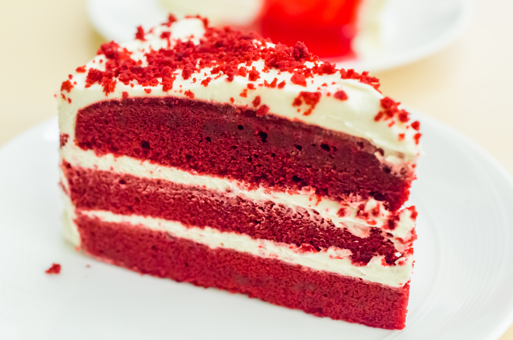

Red Velvet Cake III

Description
Moist and delicious easy cake!
Ingredients
- 1 (18.25 ounce) package yellow cake mix
- 1 (3.5 ounce) package instant vanilla pudding mix
- 4 eggs
- 1 ounce red food coloring
- ½ cup vegetable oil
- 1 cup water
- 1 tablespoon distilled white vinegar
- 1 tablespoon unsweetened cocoa powder
- 1 cup cold milk
- 1 (8 ounce) package cream cheese
- 1 (3.5 ounce) package instant vanilla pudding mix
- 1 (8 ounce) container frozen whipped topping, thawed
Steps
- Preheat oven to 350 degrees F (175 degrees C). Grease and flour one 9 x 13 inch pan.
- Mix together cake mix, 1 box pudding mix, eggs, oil, food coloring, water, vinegar, and cocoa. Pour into prepared pan.
- Bake at 350 degrees F (175 degrees C) for 35 to 40 minutes. Cool.
- Beat together milk and cream cheese. Mix in 1 box pudding mix. Fold in whipped topping. Spread on cooled cake. Refrigerate.